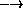
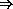

R6RS Library Syntax
Matthew Flatt and Kent Dybvig
This SRFI is being submitted by a member of the Scheme Language Editor's Committee as part of the R6RS Scheme standardization process. The purpose of such "R6RS SRFIs" is to inform the Scheme community of features and design ideas under consideration by the editors and to allow the community to give the editors some direct feedback that will be considered during the design process.
At the end of the discussion period, this SRFI will be withdrawn. When the R6RS specification is finalized, the SRFI may be revised to conform to the R6RS specification and then resubmitted with the intent to finalize it. This procedure aims to avoid the situation where this SRFI is inconsistent with R6RS. An inconsistency between R6RS and this SRFI could confuse some users. Moreover it could pose implementation problems for R6RS compliant Scheme systems that aim to support this SRFI. Note that departures from the SRFI specification by the Scheme Language Editor's Committee may occur due to other design constraints, such as design consistency with other features that are not under discussion as SRFIs.
| 1. | Abstract | ||||||||
| 2. | Rationale | ||||||||
| 3. | Specification | ||||||||
| |||||||||
| 4. | Examples | ||||||||
| 5. | Reference Implementation | ||||||||
| 6. | Issues | ||||||||
| |||||||||
| 7. | Acknowledgments | ||||||||
| 8. | References | ||||||||
| 9. | Copyright |
The library system presented here is designed to let programmers share libraries, i.e., code that is intended to be incorporated into larger programs, and especially into programs that use library code from multiple sources. The library system supports macro definitions within libraries, allows macro exports, and distinguishes the phases in which definitions and imports are needed. This SRFI defines a standard notation for libraries, a semantics for library expansion and execution, and a simple format for sharing libraries.
This standard addresses the following specific goals:
It does not address the following:
A library declaration contains the following elements:
A library definition is written with the library form:
(library <library name>
(import <import spec>*)
(export <export spec>*)
<library body>)
The <library name> specifies the name of the library, the import form specifies the imported bindings, and the export form specifies the exported bindings. The <library body> specifies the set of definitions, both for local (unexported) and exported bindings, and the set of initialization expressions (commands) to be evaluated for their effects. The exported bindings may be defined within the library or imported into the library. Bindings defined with a library are not visible in code that appears outside of the library unless they are explicitly exported from the library.
No identifier can be imported multiple times, defined multiple times, or both defined and imported.
Library names are consist of a sequence of identifiers in parentheses, followed optionally by a version consisting of a sequence of unsigned integers:
| <library name> | "> | (<identifier>+) | (<identifier>+ <version>) |
| <version> | "> | (<uinteger 10>+) |
Each import spec specifies a set of bindings to be imported into the library, the phases in which they are to be available, and the local names by which they are to be known.
| <import spec> | "> | <import set> |
| | | (for <import set> <import phase>*) |
Valid import phases are run, expand, eval, and (meta n), where run is an abbreviation for (meta 0) and expand is an abbreviation for and (meta 1).
| <import phase> | "> | run | expand | eval | (meta <level>) |
| <level> | "> | <uinteger 10> |
Phases are discussed in Section 3.3.
An <import set> names a set of bindings from another library, and possibly specifies local names for the imported bindings.
| <import set> | "> | <library reference> |
| | | (only <import set> <identifier>*) | |
| | | (except <import set> <identifier>*) | |
| | | (add-prefix <import set> <identifier>) | |
| | | (rename <import set> (<identifier> <identifier>)*) |
A <library reference> identifies a library by its (possibly compound) name and optionally by its version.
| <library reference> | "> | <identifier> | (<identifier>+) | (<identifier>+ <version reference>) |
| <version reference> | "> | (<uinteger 10>+) | <version condition> |
| <version condition> | "> | (<uinteger 10>+) |
| | | (>= <uinteger 10>) | |
| | | (<= <uinteger 10>) | |
| | | (and <version condition>+) | |
| | | (or <version condition>+) | |
| | | (not <version condition>) |
The sequence of identifiers in the importing library's library reference must match the sequence of identifiers in the imported library's library name. The importing library's <version reference> specifies a predicate on a prefix of the imported library's <version>. Each integer must match exactly and each condition has the expected meaning. Everything beyond the prefix specified in the version reference matches unconditionally. When more than one library is identified by a library reference, the choice of libraries is determined in some implementation-dependent manner.
To avoid problems such as incompatible types and replicated state, two libraries whose library names contain the same sequence of identifiers but whose versions do match cannot co-exist in the same program.
By default, all of an imported library's exported bindings are made visible within an importing library using the names given to the bindings by the imported library. The preceise set of bindings to be imported and the names of those bindings can be adjusted with the only, except, add-prefix, and rename forms as described below.
An <export set> names a set of imported and locally defined bindings to be exported, possibly giving them different external names.
| <export spec> | "> | <export set> |
| | | (for (<export set>*) <import phase>*) | |
| <export set> | "> | <identifier> |
| | | (rename (<identifier> <identifier>)*) |
In an <export set>, an <identifier> names a single binding defined within the library or imported, where the external name for the export is the same as the name of the binding within the library. A rename set exports the binding named by the first <identifier> in each pair, using the second <identifier> as the external name.
The <library body> of a library form contains definitions for local and exported bindings and initalization expressions to be evaluated when the library is invoked.
A <library body> is like lambda body (see below) except that the latter requires the body to contain at least one expression.
| <library body> | "> | <common body> |
| <common body> | "> | <declaration>* <definition>* <command>* |
| | | <declaration>* <definition>* <body begin> <command>* | |
| <body begin> | "> | (begin <common body>) | <derived body begin> |
The <body begin> permitted to allow macros to expand into a sequence including both definitions and expressions at the point where the sequence of definitions ends and the sequence of expressions begins. A <derived body begin> is a syntactic abstraction that expands into a <body begin>.
Declarations allow a program to specify various qualities for the evaluated code. Their interpretation is implementation dependent.
| <declaration> | "> | (declare <declare spec>) | <derived declaration> |
| <declare spec> | "> | unsafe | <quality> | (<quality> <priority>) |
| <quality> | "> | safe | fast | small | debug |
| <priority> | "> | 0 | 1 | 2 | 3 |
A <derived declaration> is a syntactic abstraction that expands into a <declaration>.
Definitions consist of syntax definitions, variable definitions, indirect-export forms, begin forms containing only definitions, and derived definitions.
| <definition> | "> | <syntax definition> |
| | | <variable definition> | |
| | | (indirect-export <indirect spec>*) | |
| | | (begin <declaration>* <definition>*) | |
| | | <derived definition> | |
| <syntax definition> | "> | (define-syntax <keyword> <transformer spec>) |
| <variable definition> | "> | (define <variable>) |
| | | (define <variable> <expression>) | |
| | | (define (<variable> <def formals>) <body>) | |
| <body> | "> | <common body> <expression> |
A <derived definition> is a syntactic abstraction that expands into a <definition>.
The production for <body> is also relevant for lambda bodies, recalling that <lambda expression> is defined as follows.
| <lambda expression> | "> | (lambda <formals> <body>) |
A <body> is like a <library body> except that at least one expression must be present.
The definitions of a <library body> or <body> are mutually recursive. The transformer expressions and transformer bindings are created from left to right, as described in the R6RS syntax-case SRFI [1]. The variable-definition right-hand-side expressions are evalated from left to right, as if in an implicit letrec*, and the body expressions are also evaluated from left to right after the variable-definition right-hand-side expressions.
An <indirect spec> declares a set of identifiers to be indirectly exported when a given keyword is exported.
| <indirect spec> | "> | (<keyword> <identifier>*) |
The specifier declares that the transformer bound to the specified <keyword> may expand into references to the <identifier>s and that these <identifier>s are to be "indirectly exported" for this purpose if the <keyword> is exported. An exception is raised if any of the specified <keyword>s is not defined as a macro within the library, or if any of the associated <identifiers>s is not defined within the library. An exception is also raised if a macro used outside of its defining library expands into a reference to an identifier that is defined within or imported into the library but is neither directly nor indirectly exported from the library. Identifiers that are not directly exported are not otherwise visible outside of the defining library.
An indirect-export may appear anywhere that other definitions may appear, so that syntactic abstractions that expand into syntax definitions can also produce any necessary indirect-export forms without concern for the context. They are ignored everywhere except in a <library body>.
All exported bindings, explicit or implicit, are immutable both in the exporting and importing libraries.
All bindings imported via a library's import form are visible throughout the library's <library body>. An exception is raised, however, if a binding is used out of its declared phase(s):
The import phases of an imported binding are determined by the enclosing for form, if any, in the import form of the importing library, otherwise the enclosing for form, if any, in the export form of the exporting library. If neither is given, then the binding is imported "for run" only.
The import phases thus implicitly determine when information about a library must be available and also when the various forms contained within a library must be evaluated.
Every library can be characterized by expand-time information (minimally, its imported libraries, a list of the exported keywords, a list of the exported variables, and code to evaluate the transformer expressions) and run-time information (minimally, code to evaluate the variable definition right-hand-side expressions, and code to evaluate the body expressions). The expand-time information must be available to expand references to any exported binding, and the run-time information must be available to evaluate references to any exported variable binding.
If any of a library's bindings is imported by another library "for expand" (or for any meta level greater than 0) both expand-time and run-time information for the first library is made available when the second library is expanded. If any of a library's bindings is imported by another library "for run," the expand-time information for the first library is made available when the second library is expanded, and the run-time information for the first library is made available when the run-time information for the second library is made available. If any of a library's bindings is imported by another library "for eval," both expand-time and run-time information for the first library is made available when the run-time information for the second library is made available.
We must also consider when the code to evaluate a library's transformer expressions is executed and when the code to evaluate the library's variable-definition right-hand-side expressions and body expressions is executed. We refer to executing the transformer expressions as visiting the library and to executing the variable-definition right-hand-side expressions and body expressions as invoking the library. A library must be visited before code that uses its bindings can be expanded and invoked before code that uses its bindings can be executed. Visiting or invoking a library may also trigger the visiting or invoking of other libraries.
More precisely, visiting a library at phase N causes the system to:
The order in which imported libraries are visited and invoked is not defined, but imported libraries must be visited and invoked before the library's transformer expressions are evaluated.
Similarly, invoking a library at meta phase N causes the system to:
The order in which imported libraries are invoked is not defined, but imported libraries must be invoked before the library's variable-definition right-hand-side and body expressions are evaluated.
The bindings established by visiting or invoking a library at a given phase are entirely separate from the bindings established by visiting or invoking the library at any other phase, preventing information from being shared through these bindings across phases.
The eval procedure accepts two arguments, an expression to evaluate, represented as an s-expression, and an environment:
(eval expression environment)
Environments can be constructed with the environment procedure, which accepts a set of import specifiers represented as s-expressions.
(environment import-spec ...) "> environment
The s-expression syntax of an import-spec mirrors the external syntax of an <import spec>. For example:
(eval '(+ 3 4) (environment '(r6rs))) "> 7
An exception is raised if the expand-time or run-time information for a library named in one of the import-specs is not available when the call to environment occurs, in the sense of Section 3.3.
Hello world:
(library (hello)
(import (r6rs))
(export)
(display "Hello World")
(newline))
Examples for various <import spec>s and <export spec>s:
(library (stack)
(import (r6rs))
(export make push! pop! empty!)
(define (make) (list '()))
(define (push! s v) (set-car! s (cons v (car s))))
(define (pop! s) (let ([v (caar s)])
(set-car! s (cdar s))
v))
(define (empty! s) (set-car! s '())))
(library (balloons)
(import (r6rs))
(export make push pop)
(define (make w h) (cons w h))
(define (push b amt) (cons (- (car b) amt) (+ (cdr b) amt)))
(define (pop b) (display "Boom! ")
(display (* (car b) (cdr b)))
(newline)))
(library (party)
(import (r6rs)
(only (stack) make push! pop!) ; not empty!
(add-prefix (balloons) balloon:))
;; Total exports: make, push, push!, make-party, pop!
(export (rename (balloon:make make)
(balloon:push push))
push!
make-party
(rename (party-pop! pop!)))
;; Creates a party as a stack of balloons, starting with
;; two balloons
(define (make-party)
(let ([s (make)]) ; from stack
(push! s (balloon:make 10 10))
(push! s (balloon:make 12 9))
s))
(define (party-pop! p)
(balloon:pop (pop! p))))
(library (main)
(import (r6rs) (party))
(define p (make-party))
(pop! p) ; displays "Boom! 108"
(push! p (push (make 5 5) 1))
(pop! p)) ; displays "Boom! 24"
Examples for macros and phases:
(library (helper)
(import (r6rs))
(export find-dup)
(define (find-dup l)
(and (pair? l)
(let loop ((rest (cdr l)))
(cond
[(null? rest) (find-dup (cdr l))]
[(bound-identifier=? (car l) (car rest)) (car rest)]
[else (loop (cdr rest))])))))
(library (mvlet)
(improt (r6rs) (import (for (helper) expand))
(export mvlet)
(define-syntax mvlet
(lambda (stx)
(syntax-case stx ()
[(_ [(id ...) expr] body0 body ...)
(not (find-dup (syntax-object->list (syntax (id ...)))))
(syntax (call-with-values (lambda () expr)
(lambda (id ...) body0 body ...)))]))))
(library (let-div)
(import (r6rs) (mvlet))
(export let-div)
(define (quotient+remainder n d)
(let ([q (quotient n d)])
(values q (- n (* q d)))))
(indirect-export (let-div quotient+remainder))
(define-syntax let-div
(syntax-rules ()
[(_ n d (q r) body0 body ...)
(mvlet [(q r) (quotient+remainder n d)]
body0 body ...)])))
A single identifier, e.g., r6rs, could be allowed as an abbreviation for a library name sequence containing just one identifier, e.g., (r6rs).
The import and export forms could be allowed in macro expansions. In that case, the exports and imports of a library can be determined only by macro-expanding the library.
Better support for records may be useful, possibly through a co-export form: (co-export <co spec>*), where <co spec> contains an identifier defined or imported into a library followed by a list of other identifiers defined or imported into the library:
| <co spec> | "> | (<identifier> <identifier>*) |
The meaning of a <co spec> is that if the first identifier becomes exported, either through export or co-export, then the remaining identifiers are also exported. Similarly, if the first identifier is indirectly exported through indirect-export or co-export, then then remaining identifiers are indirectly exported.
To be useful for managing records, co-export must be allowed in macro expansions. In that case, the full exports of a library can be determined only by macro-expanding the library.
Instead of having the programmer declare import phases explicitly, phases could be inferred from uses of the imported identifiers. In that case, determining the phase of an import would require macro-expanding the library body.
This SRFI was written in consultation with the full set of R6RS editors: Will Clinger, Kent Dybvig, Marc Feeley, Matthew Flatt, Manuel Serrano, Michael Sperber, and Anton van Straaten.
[1] R. Kent Dybvig. SRFI 93: R6rs syntax-case macros. Online version.
[2] Matthew Flatt. Composable and compilable macros: You want it when? In International Conference on Functional Programming (ICFP'2002), 2002. Online version.
[3] Richard A. Kelsey and Jonathan A. Rees. Modules (in 'the incomplete scheme48 reference manual for release 0.57'). 2001. Online version.
[4] Oscar Waddell and R. Kent Dybvig. Extending the scope of syntactic abstraction. In Conference Record of the Twenty Sixth Annual ACM Symposium on Principles of Programming Languages, 203-213, January 1999.
Copyright © Matthew Flatt and Kent Dybvig (2005-2006). All Rights Reserved.
Permission is hereby granted, free of charge, to any person obtaining a copy of this software and associated documentation files (the "Software"), to deal in the Software without restriction, including without limitation the rights to use, copy, modify, merge, publish, distribute, sublicense, and/or sell copies of the Software, and to permit persons to whom the Software is furnished to do so, subject to the following conditions:
The above copyright notice and this permission notice shall be included in all copies or substantial portions of the Software.
THE SOFTWARE IS PROVIDED "AS IS", WITHOUT WARRANTY OF ANY KIND, EXPRESS OR IMPLIED, INCLUDING BUT NOT LIMITED TO THE WARRANTIES OF MERCHANTABILITY, FITNESS FOR A PARTICULAR PURPOSE AND NONINFRINGEMENT. IN NO EVENT SHALL THE AUTHORS OR COPYRIGHT HOLDERS BE LIABLE FOR ANY CLAIM, DAMAGES OR OTHER LIABILITY, WHETHER IN AN ACTION OF CONTRACT, TORT OR OTHERWISE, ARISING FROM, OUT OF OR IN CONNECTION WITH THE SOFTWARE OR THE USE OR OTHER DEALINGS IN THE SOFTWARE.